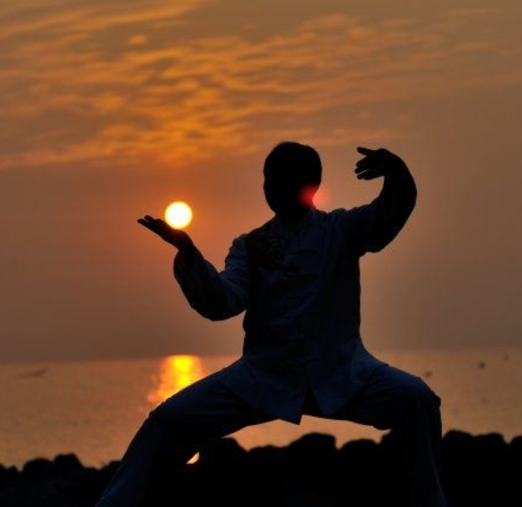
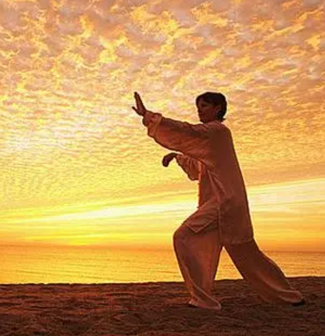
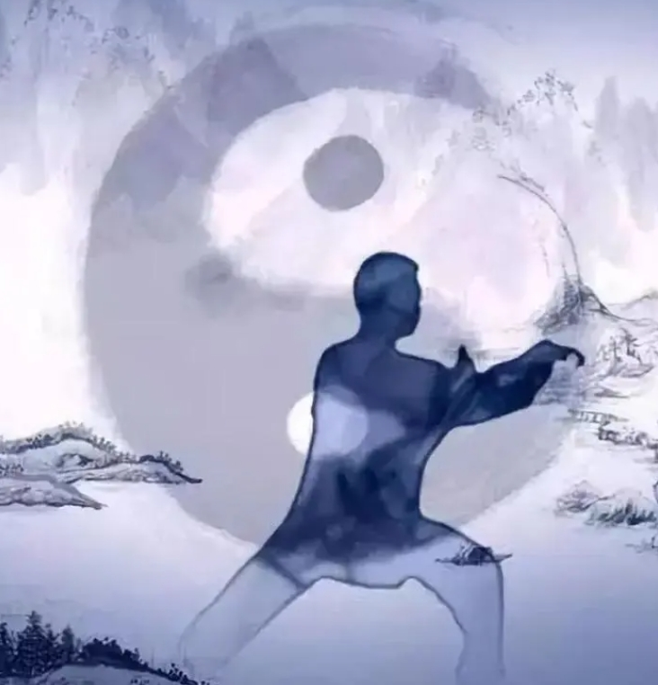
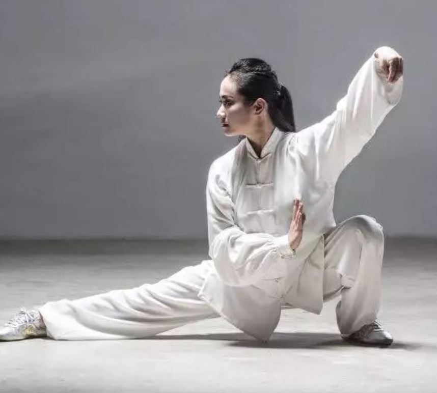
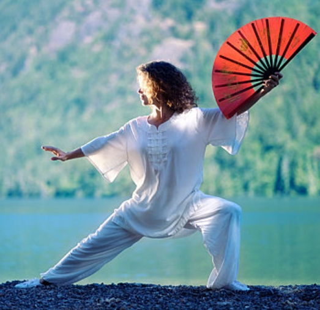

原则特点

劲力核心原则
劲力是指太极拳中所特有的一种综合素质。它是以各关节间骨缝松开，韧带肌腱伸长，肌肉适度用力为基础，通过大脑意识支配而产生的一种力量素质。这种劲力极其灵活多变，在力度、力向、力点、力速方面能因敌而变。

对拉互争原则
纵观太极拳的各项身型技术要求，可以发现其实是对身体各个部位的上下、前后、左右、内外等不同方位的对向用力，使肢体放长身体支撑八面，产生出太极拳的劲，传统太极拳称其为全身弹性的糊劲，从而达到技击健身等目的。

一动俱动原则
太极拳论讲“动无有不动”。太极拳将天地比作一个大宇宙，人体为小宇宙，人为太极之体不可不动，这种动是在意识调控下的周身协调运动，包括内脏、体表、四肢百骸，所以太极拳运动要求在动作过程中，一动俱动。

节节贯串原则
这主要讲劲力的传递过程，拳论讲，“劲起于脚跟，主于腰间，形于手指，发于脊背”，“其根在脚，发于腿，主宰于腰，形于手指；由脚而腿而腰，总须完整一气”等等，这是要求全身节节松开，一松到底，节节贯串。
相随相合原则
相随，指的是太极拳中的一致性，如提膝挑掌，提膝与挑掌相系相吸，上下相随。相合，一方面是指外表的关节位置上的对应，如手与脚合，肘与膝合，肩与胯合:另方面是意想劲力的合，如手到、脚到、身到、劲到，产生合力。

阴阳相济原则
这是一个总则.太极离不开阴阳，拳中表现为上下、里外、大小、虚实、开合、刚柔、快慢等等的运动，有人称“太极，是由人体内在物质所产生的辩证运动;太极与拳，即内形与外形的辩证地统一结合。”